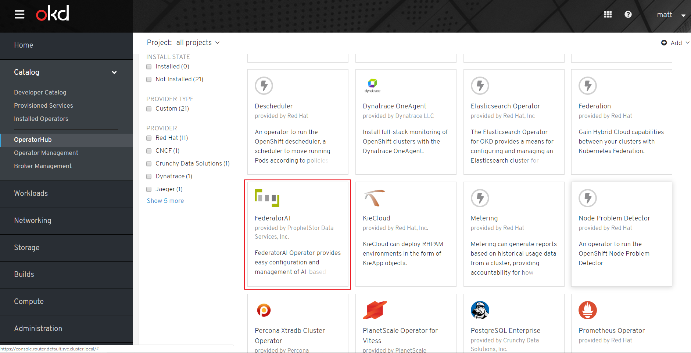
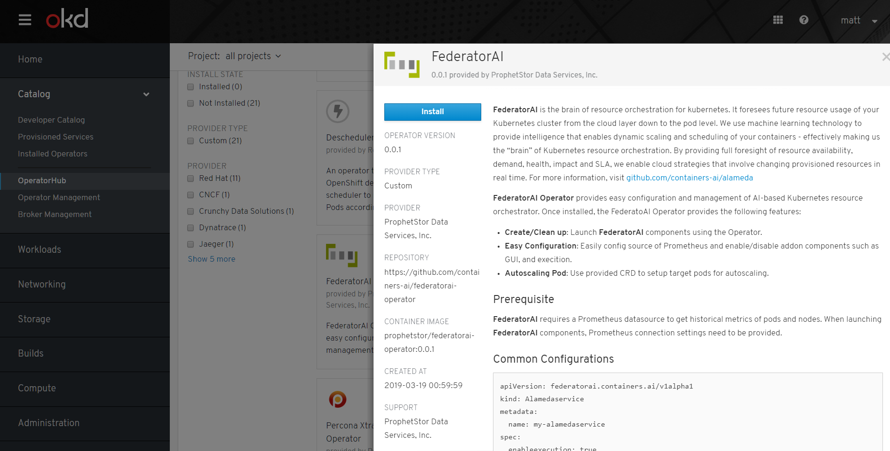
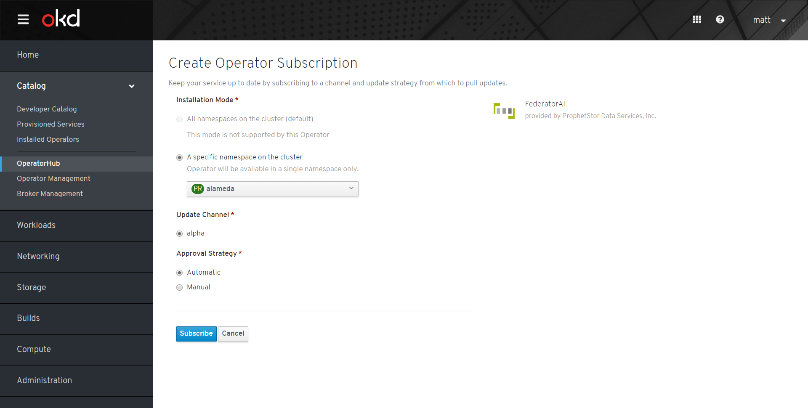
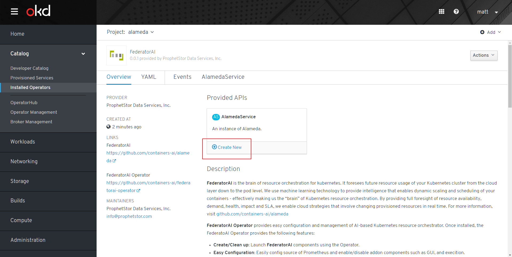
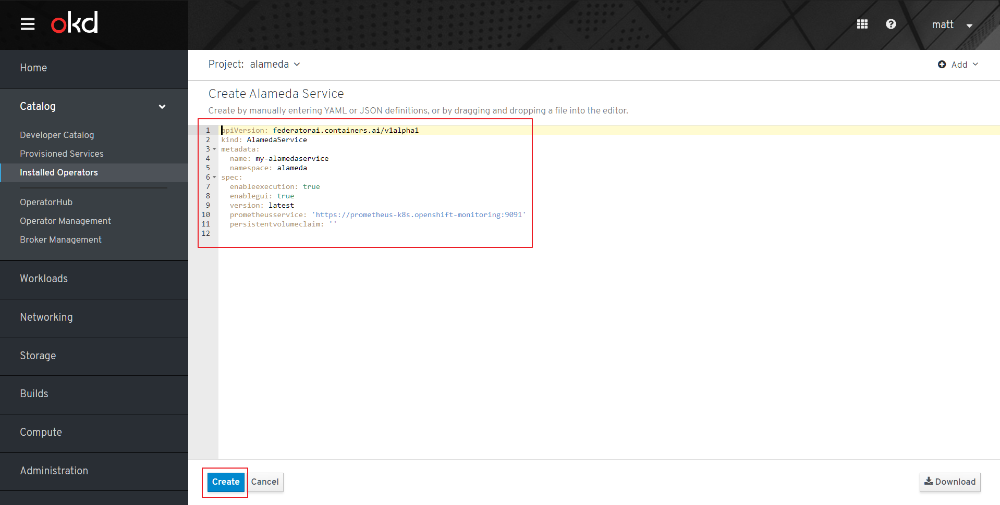

Background
OLM Architecture
Operator Framework Object Map

Deploy Operator Framework
Deploy OLM and Catalog Operator
$ git clone https://github.com/operator-framework/operator-lifecycle-manager.git
$ kubectl create -f deploy/upstream/manifests/latest/
Refer to Install document for details.
Deploy Marketplace Operator
$ git clone https://github.com/operator-framework/operator-marketplace.git
$ kubectl apply -f deploy/upstream
Refer to README.md for details.
Note: If you need to visualize OperatorHub UI in OKD, please deploy market operator in openshift-marketplace namespace.
Visualize OperatorHub in OKD 3.11
- Prepare an OKD 3.11 cluster
- Edit openshift-console deployment to replace
image: docker.io/openshift/origin-console:v3.11toimage: docker.io/openshift/origin-console:v4.0.0$ oc edit pod console-67dd586f67-7bsxt -n openshift-console - login to openshift GUI at
<your openshift cluster>/operatorhub/all-namespaces
Workflow
- Operator developer prepares all CSV, CRD, and Package yamls.
- Operator developer uses
operator-courierto verify and push operator bundle to the Quay application repository. - Cluster admin creates
OperatorSourceCR to add the operator source into cluster. (All operators under the same Quay namespace share the sameOperatorSource) - Cluster admin creates
CatalogSourceConfigto enable selected operators inOperatorSourcetoCatalogSource - Cluster admin creates
OperatorGroupfor target namespaces where operators are going to be installed into. - Cluster admin creates
Subscriptionto subscribe operators. - Catalog Operator will reconcile to
Subscriptionand createInstallPlan. - Catalog Operator will reconcile to
InstallPlanand create correspondingClusterServiceVersion. - OLM Operator reconciles to
ClusterServiceVersionand make operators started. - User creates CRs defined by operators to create services.
Examples
- Import operatorsource provided by Federator.ai
$ kubectl apply -f prophetstor-operatorsource.yaml $ cat prophetstor-operatorsource.yaml apiVersion: operators.coreos.com/v1 kind: OperatorSource metadata: name: prophetstor-operators namespace: openshift-marketplace spec: type: appregistry endpoint: https://quay.io/cnr registryNamespace: prophetstor displayName: "prophetstor Operators" publisher: "prophetstor"You should see the FederatorAI Operator in the UI. 
-
Subscribe Federator.ai operator 
-
Configure namespace and approval strategy 
-
(Optional) Approve Federator.ai operator InstallPlan if you toggle Manual approval strategy when you were subscribing Federator.ai operator
-
Check subscription status

-
Check installed ClusterServiceVersion 
- When Federator.ai ClusterServiceVersion of Federator.ai operator is created, we can create an AlamedaService CR to start deploy Alameda 